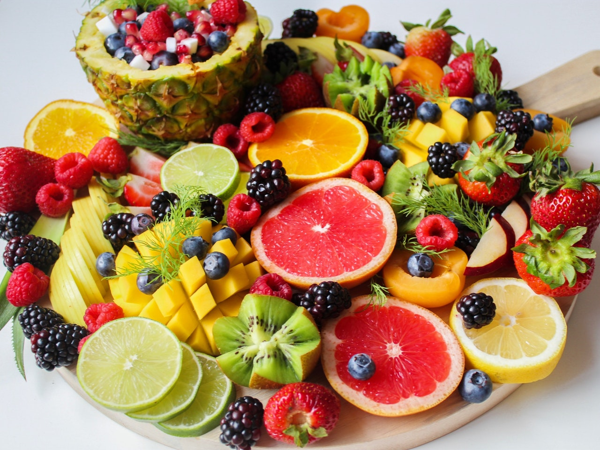

Een gezond voedingspatroon bestaat uit het eten van voldoende groente, fruit, peulvruchten, noten, vis en volkorenproducten met zoveel
mogelijk onverzadigde vetten. Maar dat is niet het enige; zout, suiker en vlees zouden we juist minder moeten eten. In een notendop bestaat
een gezond eetpatroon uit 6 ingrediënten. Hiermee geef je je lichaam de energie en voedingsstoffen die het nodig heeft. Toch is het vaak lastig
om dagelijks de producten te eten die we nodig hebben. Veel voeding eten we nog op onze emotie, om snel het hongergevoel te onderdrukken
of omdat we het gewoonweg zo gewend zijn. Het vraagt inzet om je voedingspatroon te wijzigen, maar ook om het eten van gezonde voeding
vol te houden.

| Voedingsmiddel: | Product: | ||||
|---|---|---|---|---|---|
| Groente: | Spinazie | Broccoli | Bloemkool | Sla | Sperziebonen |
| Fruit: | Appel | Banaan | Mandarijn | Sinaasappel | Druif |
| Vlees: | Gehaktbal | Biefstuk | Varkenshaas | Kipfilet | Entrecote |
| Dranken: | Water | Melk | Koffie | Thee | Fruitsap |
| Overige voedingsmiddelen: | Volkoren brood | Noten | Eieren | Kaas | Aardappelen |